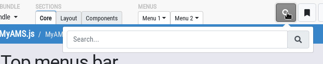

Your application can include a global search box by using this simple HTML code.

<div id="user-search">
<a href="#" class="btn btn-light pt-2"
data-toggle="dropdown" data-offset="36,7">
<i class="fa fa-search hint" title="Search..."
data-placement="bottom" data-offset="0,10" ></i>
</a>
<div class="dropdown-menu dropdown-menu-right p-2 width-100 width-sm-75 width-md-50"
data-ams-click-dismiss="false">
<form class="ams-form" method="post" action="#search.html"
target="#content" data-async
data-ams-events-handlers='{"submit-success.ams.form": "MyAMS.helpers.hideDropdown"}'>
<div class="input-group form-widget m-0">
<input type="text" class="form-control" name="query"
placeholder="Search..."/>
<button type="submit"
class="input-group-append input-group-text">
<i class="fa fa-fw fa-search"></i>
</div>
</div>
</form>
</div>
</div>
With this configuration, the search.html page may return an HTML code which
will be included directly into #content tag.
The data-ams-events-handlers attribute is used so that, when the search form
is correctly submitted, the dropdown menu is automatically hidden.